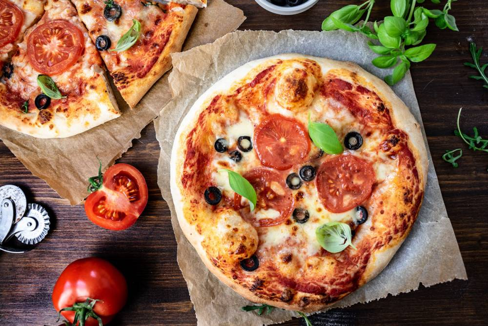
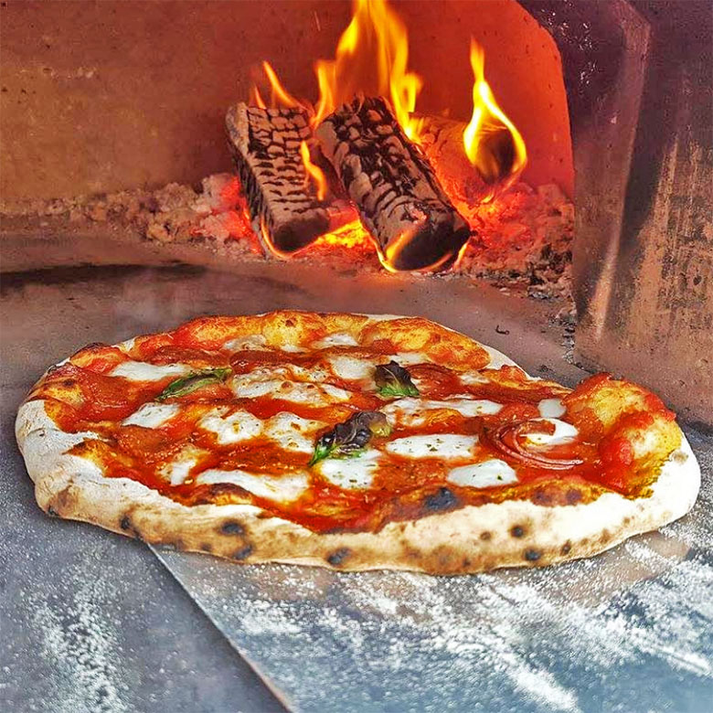

  <section id="about-us" class="padding-large">
    <div class="container-fluid padding-side" data-aos="fade-up">
      <h3 class="display-3 text-center fw-normal col-lg-4 offset-lg-4">"Bella Pizza" Étterem</h3>
      <div class="row align-items-start mt-3 mt-lg-5">
        <div class="col-lg-6">
          <div class="p-5">
            <p>
              Egy modern, barátságos pizzéria, amely a hagyományos olasz konyha ízeit kínálja. <br>
              A hely egyaránt alkalmas családi vacsorákra, baráti összejövetelekre és gyors ebédekre. <br>
              A "Bella Pizza" pizzéria meleg színekkel díszített belső térrel rendelkezik, <br>
              ahol a tégla- és faelemek dominálnak. A kemence, amely a vendégtérben helyezkedik el, az autentikus hangulatot erősíti.<br>

              Főbb jellemzők:<br>
              Dekoráció:<br>
              Rustikus olasz dizájn, tégla falak és fa bútorok.<br>
              Függő Edison-izzók a kellemes hangulatért.<br>
              Falon pizzás motívumok és olasz tájképek.<br>
              Étlap:<br>
              Kézműves pizzák különféle ízvilággal (klasszikus Margherita, szalámis Diavola, egzotikus Hawaii).<br>
              Kiegészítők: bruschetta, házi limonádé, olasz desszertek (tiramisu, panna cotta).<br>
              Kemence:<br>
              Központi helyen álló, fatüzelésű pizza kemence.<br>
              Látványos sütés, ahol a vendégek követhetik pizzájuk elkészítését.<br>
              Külső tér:<br>
              Nyáron tágas terasz nyitott, mediterrán növényekkel és napernyőkkel. Este hangulatvilágítással igazán varázslatos légkört teremt.
            </p>

          </div>
          
        </div>
        <div class="col-lg-6 mt-5 mt-lg-0">
          
          

        </div>
      </div>
    </div>
  </section>